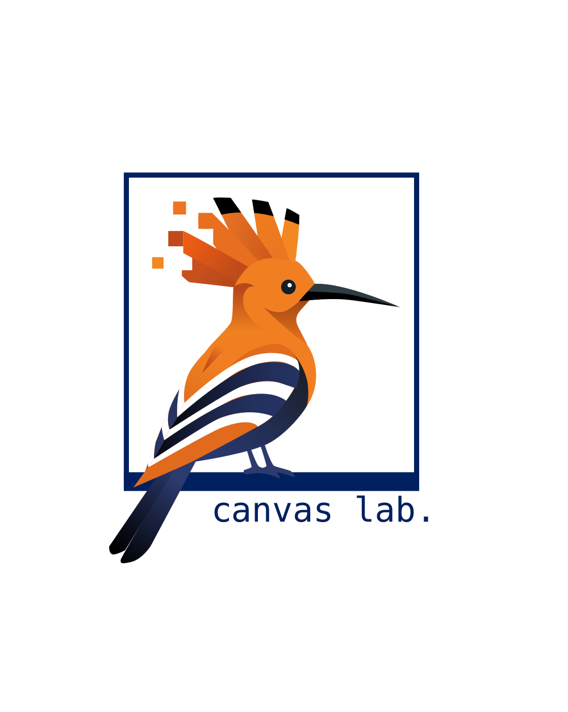
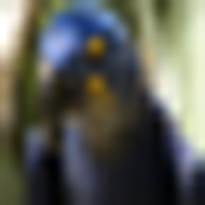
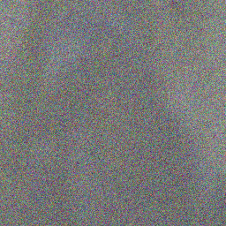
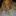
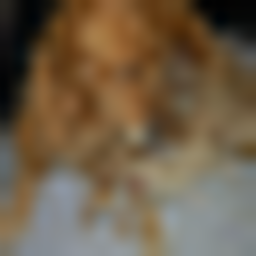
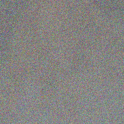

Flow matching models learn to transport samples from a simple prior distribution to a complex data distribution. When prior-data pairs are coupled via optimal transport (OT), the learned trajectories are straight and non-crossing, enabling fast, even single-step, generation. However, computing the OT coupling in high dimensions is intractable, and existing methods attempt to solve the OT problem, at the cost of persistent bias or significant overhead. Rather than solving for the OT coupling, we reformulate the problem. Once the prior is treated as a design choice rather than a fixed input, the OT coupling between prior and data is no longer unique. Many priors admit an OT-optimal identity coupling to the data, leaving us free to choose one that is also tractable to sample. We identify low-frequency projection of natural images as such a choice. The identity coupling between data and its low-frequency representation is empirically OT-optimal, the prior is structured enough to be sampled by a lightweight model at inference, and the remaining flow-matching task reduces to synthesizing high-frequency detail. Interpolating the prior with Gaussian noise further improves generation quality while preserving the OT coupling. The approach requires no modifications to the flow model itself, and integrates naturally with latent-space models, classifier-free guidance, and one-step generation frameworks. Across all benchmarks, our method reduces trajectory curvature by more than 2× compared to existing flow matching methods, yielding better generation quality in the few-step regime.
One function evaluation is the hardest setting: there is no room to correct a curved path. With our designed prior, the one-step trajectory already lands closest to a high-quality sample.
One-step CIFAR-10 samples for two different seeds. All methods share the same noise seed within each row.
Click any image to compare methods side by side.
CIFAR-10, NFE = 1. Ours gives the best one-step quality with 1.09 effective evaluations. All methods share the same noise seed. Click any image to compare.
Click any image to compare methods side by side.
1 NFE. AlignFlow excluded — no public FFHQ model.
During training, the low-frequency transform T=𝒰∘𝒟 constructs paired samples (x0,x1) for the main flow model vθ(xt,t). A small generator Gφ is trained separately to sample the low-frequency prior used at inference.





Straighter trajectories mean fewer integration steps at inference. Our method cuts curvature by more than 2× on every benchmark — with no OT solver and no precomputation.
Our prior is not pure Gaussian noise. It starts from each image's low-frequency projection, which preserves coarse layout while removing fine detail. Adding moderate Gaussian noise spreads these starting points through the ambient space, but the identity pairing remains OT-optimal around α=0.5. The slider shows the tradeoff between visible low-frequency structure and increasing noise.